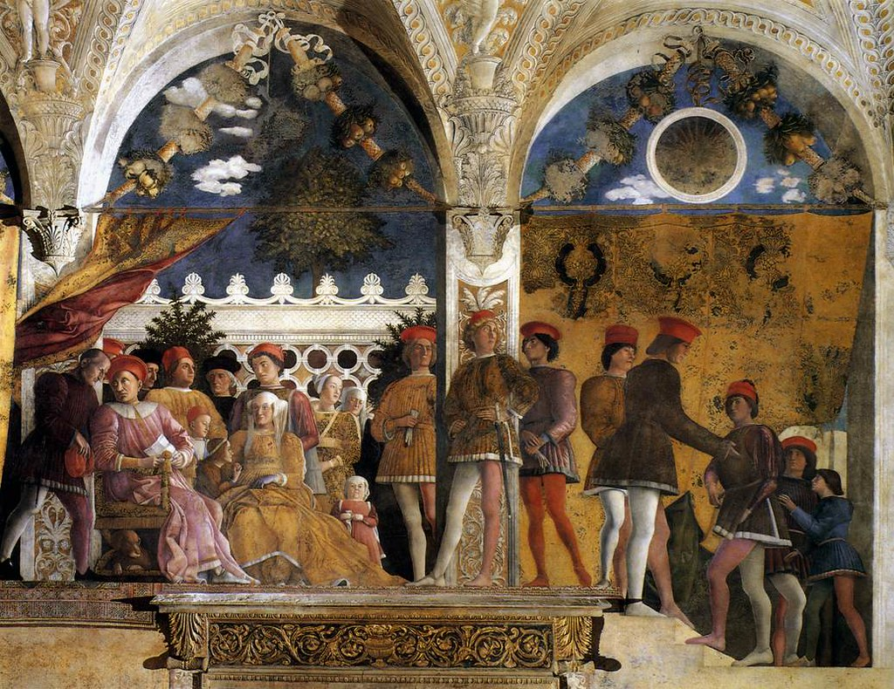
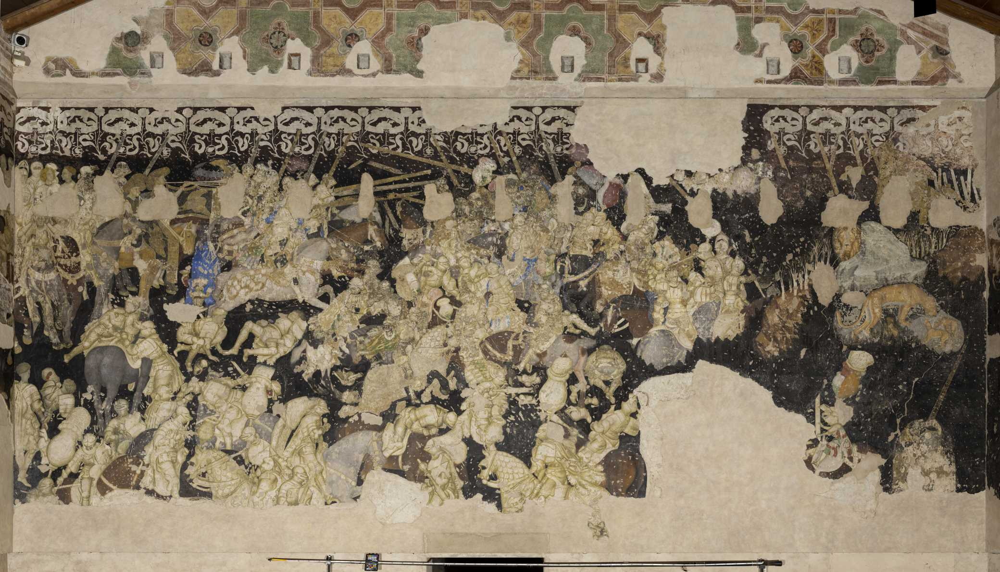
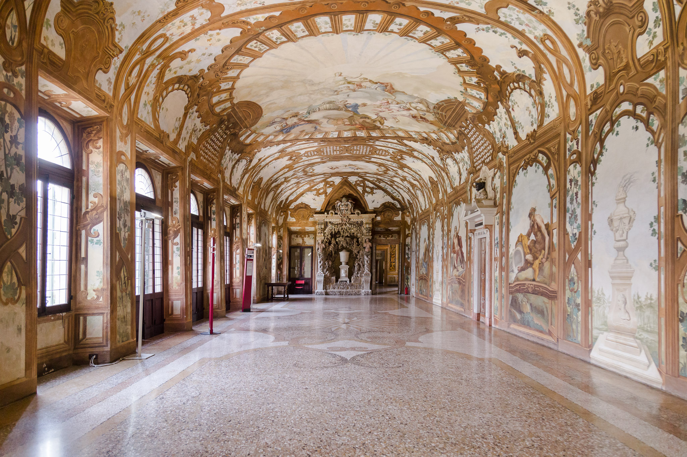

Palazzo Ducale
Storia
Il Palazzo Ducale di Mantova è uno dei complessi architettonici più imponenti e significativi d'Italia, situato nel cuore della città di Mantova. La sua storia è strettamente legata alla dinastia dei Gonzaga, che governò Mantova dal 1328 al 1708.
Nel corso dei secoli XIV-XVII, i Gonzaga trasformarono e ampliarono il Palazzo Ducale, rendendolo un complesso articolato che includeva una serie di edifici, cortili, giardini, e chiese. Tra i vari edifici che compongono il Palazzo, il Castello di San Giorgio è uno dei più noti, famoso per la Camera degli Sposi affrescata da Andrea Mantegna.
Stanza degli Sposi
La Camera degli Sposi, situata nel Castello di San Giorgio, è una delle stanze più celebri del Palazzo Ducale. Fu affrescata da Andrea Mantegna tra il 1465 e il 1474. Gli affreschi rappresentano scene della vita della famiglia Gonzaga e sono famosi per la loro prospettiva illusionistica e i dettagli realistici.
Sala del Morone
La Sala del Morone deve il suo nome a una serie di affreschi realizzati dal pittore Francesco Morone. Questa sala presenta opere che rappresentano scene mitologiche e allegoriche, caratterizzate da uno stile ricco e dettagliato tipico dell'artista veronese.

Sala del Pisanello
La Sala del Pisanello ospita affreschi attribuiti a Pisanello, che lavorò alla corte dei Gonzaga negli anni '30 del XV secolo. Gli affreschi, sebbene parzialmente danneggiati, raffigurano scene cavalleresche e mitologiche, tipiche del gotico internazionale, con un'eleganza stilistica che esalta la bellezza e la raffinatezza delle figure.


Sala degli Arcieri
Il salone ospita la celebre pala del fiammingo Pietro Paolo Rubens, vero capolavoro del 1605: La pala della Santissima Trinità.
Purtroppo, solo la tela centrale è rimasta in Italia, in quanto gli altri due dipinti che l'accompagnavano, La Trasfigurazione di Cristo e Il Battesimo di Cristo, vennero trafugati alla fine del Settecento dall’Armata Napoleonica
Galleria degli Specchi
La Galleria degli Specchi è una delle sale più sontuose del Palazzo Ducale. Prende il nome dagli specchi che decorano le pareti, creando giochi di luce e riflessi.
La galleria era utilizzata per cerimonie e ricevimenti ufficiali, e la sua opulenza riflette il potere e la ricchezza della famiglia Gonzaga.
Sala dello Zodiaco
La sala presenta una straordinaria volta a padiglione dipinta nel 1579 da Lorenzo Costa il Giovane per Guglielmo Gonzaga.
La raffigurazione delle costellazione dell’emisfero boreale fluttuano in un cielo blu notte punzonato di stelle che rimandano alla cultura tardomanieristica romana (sala del Mappamondo del palazzo Farnese di Caprarola). Al centro le figure di Astrea, divinità pagana, e di Diana. Astrea veniva talvolta usata come emblema del Duca Guglielmo.


Galleria dei Fiumi
La Galleria dei Fiumi presenta affreschi che rappresentano vari fiumi italiani e scene allegoriche legate all'acqua. Questa galleria riflette l'importanza del controllo delle acque e delle opere idrauliche per la città di Mantova, situata in una zona ricca di fiumi e laghi.
Sala di Manto
La sala di Manto é tra i più vasti e suggestivi ambienti del palazzo Ducale. Viene dedicata da Guglielmo, terzo Duca di Mantova, alla celebrazione della mitica fondatrice della città, la profetessa Manto, figlia dell'indovino Tiresia, in fuga da Tebe: l'ipotesi viene accolta anche da Dante nel XX Canto dell Inferno.
Il salone funge da fastoso ingresso all'appartamento Grande di Castello, realizzato a partire dall'inizio degli anni 70 del Cinquecento per opera del “Prefetto delle Fabbriche” Giovan Battista Bertani e del pittore di Corte Lorenzo Costa il Giovane.
Vengono celebrate le origini mitiche della città e quelle storiche della dinastia, sollecitando nel Visitatore sentimenti di ammirazione e di stupore.